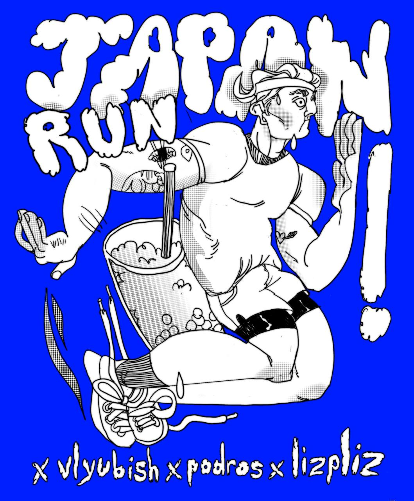

Latest Updates
Бот был создан для ограниченой аудитории трех канала. Максимум могли присоедениться 20 человек. Мероприятие: Пробежка в Москве 5 км. Бот имеет базу данных и имеет обход ошибки с гонкой в таблицею. Код написан на Python 3.10. Все 20 мест были заняты через 15 минут после публикации. Бот: @four_chair_Robot
